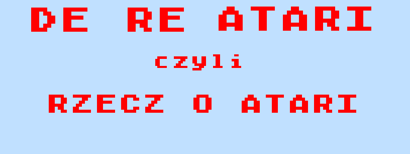

Strona poświęcona
starym (ale jarym) komputerom, konsolom i innym produktom firmy Atari.
Zobacz co nowego pojawiło się na tej stronie:
W dziale SCHEMATY pojawił się schemat stacji dyskietek Atari 1053. To stacja, która
nie wyszła z fazy prototypu. Niestety, brak firmware, ale może coś ktoś gdzieś...